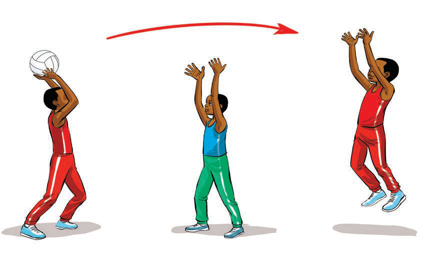

Kupokea na kudhibiti mpira ni stadi muhimu katika mchezo wa netiboli ambayo inahusisha kuudaka mpira na kuudhibiti ili timu iweze kuendelea na mchezo. Ili kufanikisha kupokea na kudhibiti mpira kwa ufanisi, mchezaji anapaswa:
Kuweka mikono wazi na vidole vikielekea mbele. Mikono inapaswa kuwa wazi ili kuweza kumiliki mpira vizuri. Vidole vikielekea mbele husaidia mchezaji kutengeneza umbo la kupokea mpira kwa urahisi.
Kulegeza kidogo mikono ili kulainisha nguvu ya mpira. Wakati mpira unapotuwa mikononi, mchezaji anapaswa kuvuta mikono kuelekea kifuani kwake ili kupunguza athari za mgongano.
Kutumia macho kufuatilia mpira ili kujua unakoelekea. Macho ya mchezaji yanapaswa kuwa kwenye mpira wakati wote ili kuona